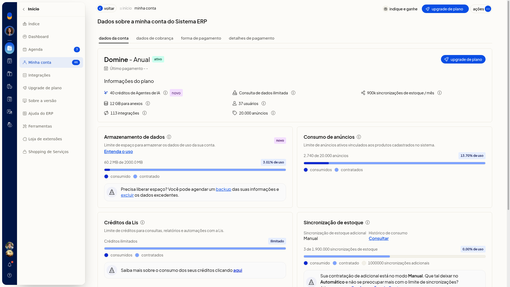

Minha conta: plano, limites e armazenamento
Instruções
-
Acesse Início > Minha conta.
-
Confira o plano contratado e a situação da conta.

-
Leia os limites exibidos: usuários, armazenamento/anexos, integrações, anúncios e sincronizações.
-
Confira o consumo em relação ao limite, inclusive armazenamento e anúncios.
-
Se precisar de mais recursos, use as ofertas de expansão da própria tela (upgrade para Protagonize, mais anúncios ou mais emissões) ou acesse Início > Upgrade de plano. Você vê o plano contratado, os limites, o consumo já utilizado e os atalhos para ampliar o plano.